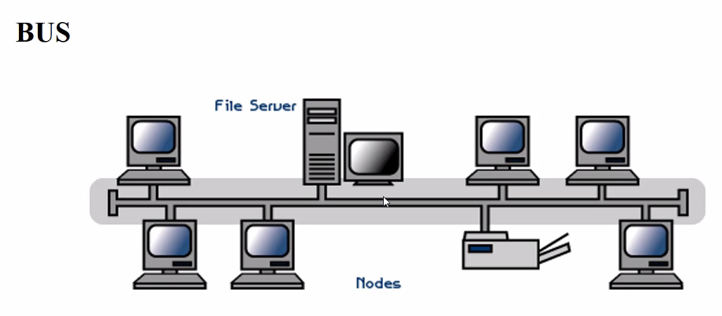

Redes conectadasmediante un cable fisico.
Problema: Si se rompe el cable deja de servir toda la red, porque los terminadores (acoplam impedancia a la transmicion del medio)

Al momento de romper el cable,en la ruptura se genera impedancia infinita que refleja y distociona la señal:

Redes en estrella (super común):
Hay un nodo central al que se conectan todos los demas. Si se rompe un cable, los demas nodos pueden seguir funcionando. La matera de eliminar esta red es provocando fallas en el nodo principal.

Anillo:
Token = turno
Cada maquina tiene un turno para hablar. Las maquinas se van pasando el token y solo la que lo tiene puede hablar.
Ventajas, no hay colisiones ni destruccion de informacion.
Desventajas: La velocidad de la red depende directamente proporcional a la velocidad de transmicion del token.
Arbol:
Conbinacion de redes tipo bus y redes tipo estrella como ramas.


Esta topologia es cara de constuir.A veces no se interconectan todos los nodos entre si,pero si se tiene un mesh.
Que es esto?
Son solo 4 buses conectados mediante un router: